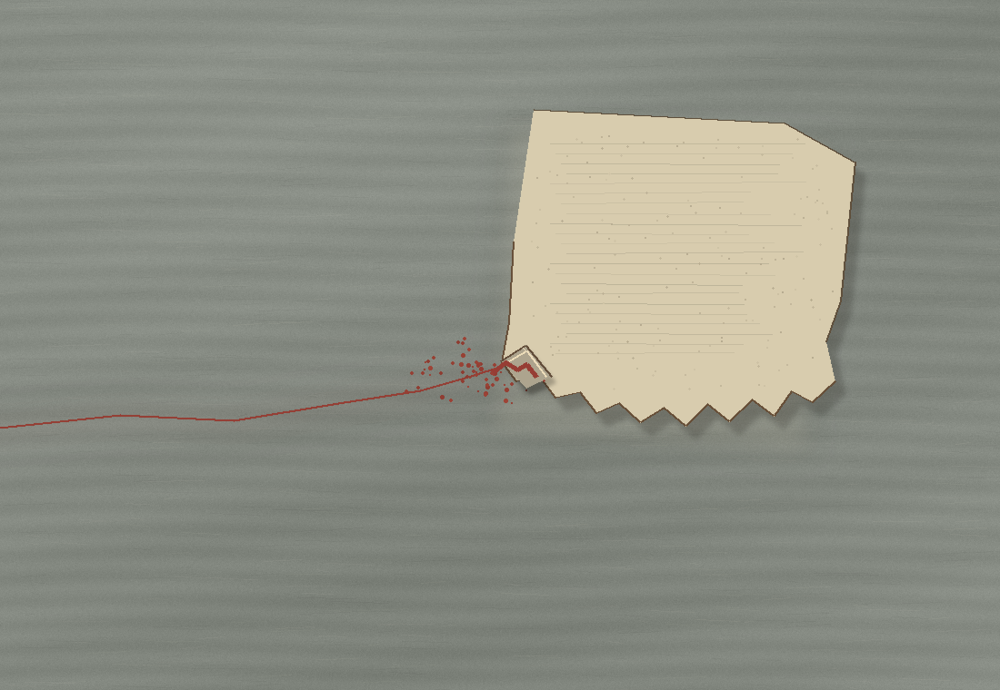

Where the Paper Lifts
A red trace reaches a torn sheet on worked timber. At the small lifted edge, color catches; the wood keeps a faint resting place after the paper has shifted.

A red trace reaches a torn sheet on worked timber. At the small lifted edge, color catches; the wood keeps a faint resting place after the paper has shifted.
